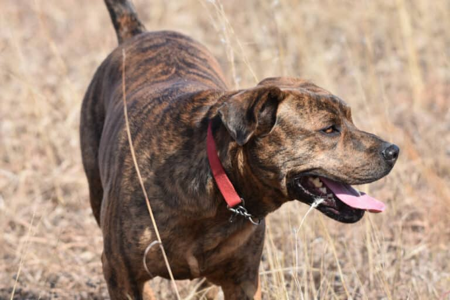

Buck
Buck is a Brindle Plot hound that my mom and I rescued 5 years ago. She is a bit stubborn but very loving and enjoys walks and being scratched behind the ears. She's very territorial which makes her the perfect protective companion.
Lola

Lola is a great dane. She is a puppy who is full of energy and loves to play.She loves chewing on anything she finds, so its best not to leave important shoes outside. She also loves her kibbles and cant stay away from sour milk.
Kitana Beethoven

Kitana is naggy and loves purring around people's feet. He loves to be the center of attention and can never stay away from trees. Someone always has to help him down. However, he is full of love and enjoys cuddling.
Max

Max is a ridgeback basenji mix. He is very energetic and loves to run around the yard. He is also very loyal and protective of his family, He cannot stay away from squirrels and will bark fora whole hour if he has too.
Spike

Spike is a german shepherd and is the newest addition to the family. He is bossy and full of attitude. He loves going for walks and will definitely pull on the leash too hard. He is playful and loves treats.